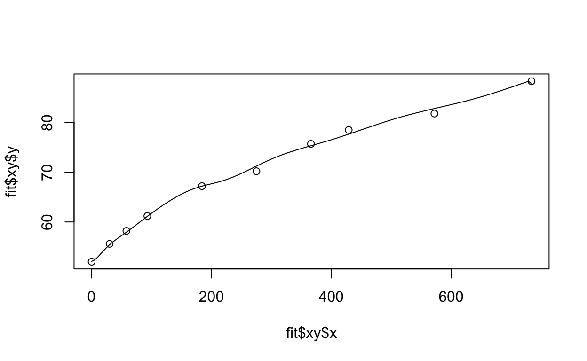

Intro
The “hbgd” R package is a collection of visual and analytic methods for the study of healthy birth, growth, and development in children.
This document provides a walk through of much of the package’s functionality, provided through examples and discussion. The package reference page has an exhaustive listing of all of the exported functions in the package along with detailed documentation about their parameters and usage.
Installation
The hbgd package is not yet on CRAN but can be installed from a CRAN-like repository with the following:
options(repos = c(
CRAN = "http://cran.rstudio.com/",
tessera = "http://packages.tessera.io",
BioCsoft = "http://bioconductor.org/packages/3.0/bioc"))
install.packages("hbgd")The Bioconductor repository is added because some of the fitting methods linked to in ‘hbgd’ have dependencies on Bioconductor packages.
Once the package is is installed, you simply need to load it:
library(hbgd)Working With Data
The primary type of data this package is meant to deal with is longitudinal anthropometric growth measurements with associated variables having to do with health/interventions/insults, along with per-subject meta data.
CPP sample data
A subset of growth data from the collaborative perinatal project (CPP) is shipped with this package to serve as an example for the various methods available in the package.
The data set looks like this:
head(cpp) subjid agedays wtkg htcm lencm bmi waz haz whz baz siteid
1 1 1 4.621 55 55 15.27603 2.38 2.61 0.19 1.35 5
2 1 123 8.760 NA NA NA 1.99 NA NA NA 5
3 1 366 14.500 79 79 23.23346 3.84 1.35 4.02 3.89 5
4 2 1 3.345 51 51 12.86044 0.06 0.50 -0.64 -0.43 5
5 2 123 4.340 NA NA NA -3.99 NA NA NA 5
6 2 366 8.400 73 73 15.76281 -1.27 -1.17 -0.96 -0.80 5
sexn sex feedingn feeding gagebrth birthwt birthlen apgar1 apgar5 mage
1 1 Male 90 Unknown 287 4621 55 8 9 21
2 1 Male 90 Unknown 287 4621 55 8 9 21
3 1 Male 90 Unknown 287 4621 55 8 9 21
4 1 Male 90 Unknown 280 3345 51 8 9 15
5 1 Male 90 Unknown 280 3345 51 8 9 15
6 1 Male 90 Unknown 280 3345 51 8 9 15
mracen mrace mmaritn mmarit meducyrs sesn ses parity gravida
1 5 White 1 Married 12 50 Middle 1 1
2 5 White 1 Married 12 50 Middle 1 1
3 5 White 1 Married 12 50 Middle 1 1
4 5 White 1 Married NA NA . 0 0
5 5 White 1 Married NA NA . 0 0
6 5 White 1 Married NA NA . 0 0
smoked mcignum preeclmp comprisk geniq sysbp diabp
1 0 0 0 none NA NA NA
2 0 0 0 none NA NA NA
3 0 0 0 none NA NA NA
4 1 35 0 none NA NA NA
5 1 35 0 none NA NA NA
6 1 35 0 none NA NA NAThe column names are illustrative of “standards” that the package is designed to deal with, for example subjid for the subject ID, wtkg for weight in kilograms, htcm for height in centimeters, etc.
Variable labels
A full list of recognized variable names and associated labels is available in a named list that comes with the package, hbgd_labels, also available as a data frame, hbgd_labels_df. A convenience function view_variables() will launch an interactive table that will allow you to explore the available variables.
view_variables()While you can use most of the functionality of this package with data in your own format, it will be most convenient to transform your variable names to match those found hbgd_labels.
Data checking
The functions in this package were designed to work on data with specific variable names and types. Instead of trying to accommodate every possible dataset one might bring to use with the package, a thorough data checking method, check_data() is provided with the package that helps guide the user to transform their data into a conforming format.
To get a feel for what the output of this function looks like and what it checks, we can try it on our cpp dataset:
check_data(cpp, has_hcir = FALSE)Checking if data is a data frame... ✓
Checking variable name case... ✓
Checking for variable 'subjid'... ✓
Checking for variable 'agedays'... ✓
Checking for variable 'sex'... ✓
Checking values of variable 'sex'... ✓
Checking for variable 'lencm'... ✓
Checking for variable 'htcm'... ✓
Checking for variable 'wtkg'... ✓
Checking for both 'lencm' and 'htcm'...
Checking z-score variable 'haz' for height... ✓
Checking z-score variable 'waz' for weight... ✓
Checking to see if data is longitudinal... ✓
Checking names in data that are not standard 'hbgd' variables...
All checks passed!
As a final check, please ensure the units of measurement match
the variable descriptions (e.g. age in days, height in centimeters, etc.).We specify has_hcir = FALSE because this dataset does not have any head circumference data.
From the output, we see that all checks pass, and it reminds us to make sure our variables are in the correct units. Since we are shipping the cpp data with the package, we of course have made sure that it conforms with the required format.
SMOCC data
Let’s now get a more realistic feel for what we might encounter from check_data() when we use an outside dataset. The ‘brokenstick’ package which comes as a dependency to ‘hbgd’ has a nice example data set from the SMOCC study (see ?brokenstick::smocc.hgtwgt for more details). Let’s check it:
smc <- brokenstick::smocc.hgtwgt
head(smc) src id rec nrec age sex etn ga bw hgt wgt hgt.z
1 smocc 10001 1 10 0.0000 female NL 40 3960 52.0 3.96 1.531
2 smocc 10001 2 10 0.0821 female NL 40 3960 55.6 4.05 1.007
3 smocc 10001 3 10 0.1588 female NL 40 3960 58.2 4.56 0.700
4 smocc 10001 4 10 0.2546 female NL 40 3960 61.2 5.09 0.598
5 smocc 10001 5 10 0.5038 female NL 40 3960 67.2 6.81 0.615
6 smocc 10001 6 10 0.7529 female NL 40 3960 70.2 7.77 0.004check_data(smc, has_hcir = FALSE)Checking if data is a data frame... ✓
Checking variable name case... ✓
Checking for variable 'subjid'... ✗
Variable 'subjid' was not found in the data.
Closest matches (with index): id (2), bw (9)
Definition: Subject ID
This variable is required.
Please create or rename the appropriate variable.
To rename, choose the appropriate index i and:
names(dat)[i] <- 'subjid'
Checking for variable 'agedays'... ✗
Variable 'agedays' was not found in the data.
Closest matches (with index): age (5), ga (8)
Definition: Age since birth at examination (days)
This variable is required.
Please create or rename the appropriate variable.
To rename, choose the appropriate index i and:
names(dat)[i] <- 'agedays'
Checking for variable 'sex'... ✓
Checking values of variable 'sex'... ✗
All values of variable 'sex' must be 'Male' and 'Female'.
Checking for variable 'lencm'...
Variable 'lencm' was not found in the data.
Closest matches (with index): nrec (4), rec (3)
Definition: Recumbent length (cm)
This variable is not required but if it exists in the data
under a different name, please rename it to 'lencm'.
Checking for variable 'htcm'...
Variable 'htcm' was not found in the data.
Closest matches (with index): hgt (10), hgt.z (12)
Definition: Standing height (cm)
This variable is not required but if it exists in the data
under a different name, please rename it to 'htcm'.
Checking for variable 'wtkg'...
Variable 'wtkg' was not found in the data.
Closest matches (with index): wgt (11), hgt (10)
Definition: Weight (kg)
This variable is not required but if it exists in the data
under a different name, please rename it to 'wtkg'.
Checking for both 'lencm' and 'htcm'...
Checking names in data that are not standard 'hbgd' variables...
The following variables were found in the data:
src, id, rec, nrec, age, etn, ga, bw, hgt, wgt, hgt.z
Run view_variables() to see if any of these can be mapped
to an 'hbgd' variable name.
Some checks did not pass - please take action accordingly.We see that several checks didn’t pass. The function tries to provide as much guidance as possible to fix the issues. Note that it does not make any changes to the data - it only provides guidance. We see that there is a column in the data, id, which has a name similar to subjid that we can guess should be renamed to subjid. We see a similar indication for agedays. It also tells us that it did successfully find a sex variable but that the values need to be “Male” and “Female”. Finally, we see that variables hgt and wgt exist in the data but should be htcm and wtkg to conform with the package. Let’s set those and re-check the data:
# fix subjid and agedays names
names(smc)[2] <- "subjid"
names(smc)[5] <- "agedays"
# fix sex variable ("male" -> "Male", "female" -> "Female")
smc$sex <- as.character(smc$sex)
smc$sex[smc$sex == "male"] <- "Male"
smc$sex[smc$sex == "female"] <- "Female"
# fix htcm and wtkg names
names(smc)[10] <- "htcm"
names(smc)[11] <- "wtkg"
check_data(smc, has_hcir = FALSE)Checking if data is a data frame... ✓
Checking variable name case... ✓
Checking for variable 'subjid'... ✓
Checking for variable 'agedays'... ✓
Checking for variable 'sex'... ✓
Checking values of variable 'sex'... ✓
Checking for variable 'lencm'...
Variable 'lencm' was not found in the data.
Closest matches (with index): nrec (4), rec (3)
Definition: Recumbent length (cm)
This variable is not required but if it exists in the data
under a different name, please rename it to 'lencm'.
Checking for variable 'htcm'... ✓
Checking for variable 'wtkg'... ✓
Checking for both 'lencm' and 'htcm'...
Checking z-score variable 'haz' for height...
Could not find height z-score variable 'haz'.
If it exists, rename it to 'haz'.
If it doesn't exist, create it with:
dat$haz <- who_htcm2zscore(dat$agedays, dat$htcm, dat$sex)
Checking z-score variable 'waz' for weight...
Could not find weight z-score variable 'waz'.
If it exists, rename it to 'waz'.
If it doesn't exist, create it with:
dat$waz <- who_wtkg2zscore(dat$agedays, dat$wtkg, dat$sex)
Checking to see if data is longitudinal... ✓
Checking names in data that are not standard 'hbgd' variables...
The following variables were found in the data:
src, rec, nrec, etn, ga, bw, hgt.z
Run view_variables() to see if any of these can be mapped
to an 'hbgd' variable name.
All checks passed!
As a final check, please ensure the units of measurement match
the variable descriptions (e.g. age in days, height in centimeters, etc.).Now we see that all critical checks passed, but there are additional messages that give us things to check. One is that haz and waz variables corresponding to z-scores for htcm and wtkg could not be found. We see that there is a variable hgt.z in the data that we should rename to haz, but that there is no variable that looks like waz. Also, we followed the guidance and checked the units of the age variable we renamed to agedays and found that it was in years, so we need to convert it to days.
names(smc)[12] <- "haz"
smc$waz <- who_wtkg2zscore(smc$agedays, smc$wtkg, smc$sex)
smc$agedays <- years2days(smc$agedays)
check_data(smc, has_hcir = FALSE)Checking if data is a data frame... ✓
Checking variable name case... ✓
Checking for variable 'subjid'... ✓
Checking for variable 'agedays'... ✓
Checking for variable 'sex'... ✓
Checking values of variable 'sex'... ✓
Checking for variable 'lencm'...
Variable 'lencm' was not found in the data.
Closest matches (with index): nrec (4), rec (3)
Definition: Recumbent length (cm)
This variable is not required but if it exists in the data
under a different name, please rename it to 'lencm'.
Checking for variable 'htcm'... ✓
Checking for variable 'wtkg'... ✓
Checking for both 'lencm' and 'htcm'...
Checking z-score variable 'haz' for height... ✓
Checking z-score variable 'waz' for weight... ✓
Checking to see if data is longitudinal... ✓
Checking names in data that are not standard 'hbgd' variables...
The following variables were found in the data:
src, rec, nrec, etn, ga, bw
Run view_variables() to see if any of these can be mapped
to an 'hbgd' variable name.
All checks passed!
As a final check, please ensure the units of measurement match
the variable descriptions (e.g. age in days, height in centimeters, etc.).After the final check, it looks like we are in good shape. It is giving us messages about a lencm variable that is not found (typically length is reported for the first 2 years, then height, but the ‘hbgd’ package looks at the combination of the two as htcm). It also gives a message about variables found in the data set that are not known variables to ‘hbgd’.
Once one is familiar with the standards for data in the package, datasets can be curated to meet these standards beforehand to avoid manual checks like this.
Dealing with longitudinal data
Longitudinal data by definition provides repeated measurements of one or more variables over time for the same subject. However, it often additionally provides a set of subject-level variables - variables that do not change over time for each subject but provide additional demographic or other information about each subject.
For example, let’s look at a few rows and columns of the cpp data:
cpp[1:5, c(1, 5:13)] subjid lencm bmi waz haz whz baz siteid sexn sex
1 1 55 15.27603 2.38 2.61 0.19 1.35 5 1 Male
2 1 NA NA 1.99 NA NA NA 5 1 Male
3 1 79 23.23346 3.84 1.35 4.02 3.89 5 1 Male
4 2 51 12.86044 0.06 0.50 -0.64 -0.43 5 1 Male
5 2 NA NA -3.99 NA NA NA 5 1 MaleVariables like lencm and bmi are time-varying variables, but variables like siteid and sex are subject-level - they don’t change within each subject.
When dealing with longitudinal data, sometimes we want to look at just subject-level variables. In doing so, we want to transform the data so there is only one record per subject. There is a utility function for this, get_subject_data() that returns only subject-level columns of the data, with one record per subject.
head(get_subject_data(cpp)) subjid siteid sexn sex feedingn feeding gagebrth
1 1 5 1 Male 90 Unknown 287
4 2 5 1 Male 90 Unknown 280
8 3 5 1 Male 90 Unknown 266
9 4 5 2 Female 3 Mixture breast/formula fed 266
10 5 5 2 Female 1 Exclusively breast fed 259
11 6 5 1 Male 3 Mixture breast/formula fed 273
birthwt birthlen apgar1 apgar5 mage mracen mrace mmaritn mmarit
1 4621 55 8 9 21 5 White 1 Married
4 3345 51 8 9 15 5 White 1 Married
8 3827 54 9 9 23 5 White 1 Married
9 3147 49 8 9 26 5 White 1 Married
10 3033 50 8 8 28 5 White 1 Married
11 3770 50 2 8 29 5 White 1 Married
meducyrs sesn ses parity gravida smoked mcignum preeclmp
1 12 50 Middle 1 1 0 0 0
4 NA NA . 0 0 1 35 0
8 NA NA . 1 1 1 20 0
9 12 50 Middle 3 3 1 15 0
10 7 50 Middle 4 4 1 10 0
11 12 63 Upper-middle 5 5 1 4 0
comprisk
1 none
4 none
8 none
9 none
10 none
11 noneLikewise, if you only want to look at the time-varying variables in the data, you can use get_time_data().
head(get_time_data(cpp)) agedays wtkg htcm lencm bmi waz haz whz baz geniq sysbp
1 1 4.621 55 55 15.27603 2.38 2.61 0.19 1.35 NA NA
2 123 8.760 NA NA NA 1.99 NA NA NA NA NA
3 366 14.500 79 79 23.23346 3.84 1.35 4.02 3.89 NA NA
4 1 3.345 51 51 12.86044 0.06 0.50 -0.64 -0.43 NA NA
5 123 4.340 NA NA NA -3.99 NA NA NA NA NA
6 366 8.400 73 73 15.76281 -1.27 -1.17 -0.96 -0.80 NA NA
diabp
1 NA
2 NA
3 NA
4 NA
5 NA
6 NAMeta data
This package has a utility function, get_data_attributes(), that is used behind the scenes to compute meta data about longitudinal data sets. This function does things like infers whether a variable is subject-level or time-varying, and computes some summary statistics that are useful to have on hand like the number of subjects, etc. This function will attach the meta data to the data set’s attributes. We mention it here because it may be useful to know that this meta data exists.
For example:
cpp <- get_data_attributes(cpp)This adds an attribute list called “hbgd” to the the data, which includes a summary about the data:
str(attr(cpp, "hbgd")$var_summ)Classes 'var_summ' and 'data.frame': 37 obs. of 5 variables:
$ variable: chr "subjid" "agedays" "wtkg" "htcm" ...
$ label : chr "Subject ID" "Age since birth at examination (days)" "Weight (kg)" "Standing height (cm)" ...
$ type : chr "subject id" "time indicator" "time-varying" "time-varying" ...
$ vtype : chr "num" "cat" "num" "num" ...
$ n_unique: int 500 5 417 81 42 956 527 137 413 392 ...This tells us which variables are subject-level and time-varying variables, and which are categorical vs. numeric. It also adds labels and computes some summary statistics. This information is useful for some of the summary plots that we will be making.
Dealing with length/height
Most data sets have a variable for recumbent length measurements, lencm, indicating the measured length of the child up to 2 years, after which a new variable for standing height, htcm, becomes available. For plotting and modeling purposes, it is most often useful to deal with both measurements in the same variable.
There is a utility function, fix_height(), that will take the data and return a modified data set where by default the htcm variable will become the combination of both lencm and htcm. This makes the data compatible with WHO growth standard lookups since the WHO lookups in this package reference htcm for both length and height.
cpp <- fix_height(cpp)Growth Standards
A major feature of this package is a collection of utility functions for conveniently converting anthropometric measurements to z-scores or centiles (and converting z-scores / centiles to measurements) for three major growth standards:
- WHO growth standard (functions prefixed with
who_) - INTERGROWTH newborn size standard (functions prefixed with
igb_) - INTERGROWTH fetal growth standard (functions prefixed with
igpre_)
These growth standards have previously not necessarily been easy to access inside an R analysis. In some cases R code has been provided for making conversions with the growth standard but in a form that is difficult to embed and generalize (copying and pasting code that will be frequently used is messy will almost surely lead to errors). Some standards are provided only through published coefficients. The goal here is to put all the standards into a single package with a unified interface, while providing additional functionality like interpolation for regions where a standard’s provided tables are sparse.
The growth standard conversion methods have been painstakingly checked for accuracy through comparisons with the standards provided by the original sources. However, we advise caution and double checking against the original sources when results will impact decisions. Links to the original sources can be found in the sections for each standard below.
WHO growth standard
The WHO growth standard provides international standard distributions for several anthropometric measurements.
The data / methodology for the WHO growth standard functions in this package come from the WHO child growth standard and the 5-19 years growth reference.
WHO growth standard conversions are available for the following pairings of variables:
| x_var | y_var | span of x_var |
|---|---|---|
| agedays | wtkg (weight kg) | ~10 years (0 - 3682 days) |
| agedays | htcm (height cm) | ~19 years (0 - 6970 days) |
| agedays | bmi (BMI kg/m2) | ~19 years (0 - 6970 days) |
| agedays | hcircm (head circumference cm) | ~ 5 years (0 - 1856 days) |
| agedays | muaccm (mid upper-arm circumference cm) | ~ 5 years (0 - 1856 days) |
| agedays | ss (subscalpular skinfold) | ~ 5 years (0 - 1856 days) |
| agedays | tsftmm (triceps skinfold thickness mm) | ~ 5 years (0 - 1856 days) |
| htcm | wtkg | 120 cm |
Note that the WHO provides recumbent length for 0-2 years of age, after which the standing height is provided. Here we have merged the two into a single variable, htcm.
Also note that in almost every case the x variable is agedays - the age since birth in days. When the desired x variable is agedays, a simplified set of functions has been created to convert between z-scores or centiles with the following naming convention, for example, when working with wtkg:
who_wtkg2zscore(agedays, wtkg, sex = “Female”): for specifiedwtkgvalues at agesagedays, get the corresponding Female z-scoreswho_wtkg2centile(agedays, wtkg, sex = “Female”): for specifiedwtkgvalues at agesagedays, get the corresponding Female centileswho_centile2wtkg(agedays, p = 50, sex = “Female”): for given centiles (p=50, or median, as default) at agesagedays, get the correspondingwtkgvalueswho_zscore2wtkg(agedays, z = 0, sex = “Female”): for given z-scores (z=0as default) at agesagedays, get the correspondingwtkgvalues
If you are working with htcm you can swap wtkg for htcm, etc.
As z-scores are related to centiles through a simple conversion, there is a bit of redundancy in having functions for both, but both are provided for convenience.
Examples
Here are some examples:
Get WHO median height vs. age for first-year females
Here we get the WHO median height vs. age for females weekly for the first year:
x <- seq(0, 365, by = 7)
med <- who_centile2htcm(x)
plot(x, med, xlab = "age in days", ylab = "median female height (cm)")
Here the defaults of sex="Female" and p=50 were used, giving us the median height for females at the specified ages.
Get WHO 75th centile height vs. age for first-year males
To get the WHO 75th centile weight value for age of males at these same time points, we can do the following:
q75 <- who_centile2htcm(x, p = 75, sex = "Male")Get the WHO centile for specific age and height
Suppose we want to know the WHO centile of a female child at 2 years of age (730.5 days) who is 90 cm tall:
who_htcm2centile(agedays = 730.5, htcm = 90)[1] 88.86932This girl’s height is at the 89th centile.
Getting values for combinations of parameters
We can send vectors of values into any of the functions and lookups in the appropriate tables will be made for each distinct case.
For example, suppose we want to plot the WHO 99th centile of weight for age of boys and girls for the first 4 years of life:
dat <- data.frame(
x = rep(seq(0, 1461, length = 100), 2),
sex = rep(c("Male", "Female"), each = 100))
dat$p99 <- who_centile2wtkg(dat$x, p = 99, sex = dat$sex)
xyplot(kg2lb(p99) ~ days2years(x), groups = sex, data = dat,
ylab = "99th percentile weight (pounds) for males",
xlab = "age (years)", auto.key = TRUE)
Here we are using a convenience function, kg2lb(), provided with the package to plot the weights in pounds.
Getting z-scores for combinations of parameters
Suppose we want to compute the height and weight-for-age z-scores (HAZ and WAZ) for each subject in the cpp data:
haz <- who_htcm2zscore(cpp$agedays, cpp$htcm, sex = cpp$sex)
waz <- who_wtkg2zscore(cpp$agedays, cpp$wtkg, sex = cpp$sex)Since haz and waz have already provided with the data, we can check that our result from the WHO standard matches that of the provided data:
comp = make.groups(
haz = data.frame(data = cpp$haz, computed = haz),
waz = data.frame(data = cpp$waz, computed = waz)
)
xyplot(computed ~ data | which, data = comp)
Generic WHO functions
To utility functions described so far all for measurements against age. To deal with the case of height-for-weight WHO calculations, and also to provide a more generic interface to accessing the WHO growth standards, the following functions are also provided:
who_value2zscore(x, y, x_var = “agedays”, y_var = “htcm”, sex = “Female”)who_value2centile(x, y, x_var = “agedays”, y_var = “htcm”, sex = “Female”)who_centile2value(x, p = 50, x_var = “agedays”, y_var = “htcm”,,sex = “Female”)who_zscore2value(x, z = 0, y_var = “htcm”, x_var = “agedays”,,sex = “Female”)
Here both the x variable and y variable can be specified. For example, the following are equivalent:
who_htcm2centile(agedays = 730.5, htcm = 90)[1] 88.86932who_value2centile(x = 730.5, y = 90, x_var = "agedays", y_var = "htcm")[1] 88.86932But now we can do things like computing height-for-weight centiles:
who_value2centile(x = 90, y = 12, x_var = "htcm", y_var = "wtkg")[1] 27.61003INTERGROWTH newborn standard
The INTERGROWTH newborn standard provides standards for newborn weight, length, and head circumference by gestational age and sex from gestational age of 232 days to 300 days.
Functions for this standard have a similar naming structure as we saw for the WHO standards:
igb_lencm2zscore(gagebrth, lencm, sex = “Female”): for specifiedlencmvalues at gestational ages at birthgagebrth, get the corresponding Female z-scoresigb_lencm2centile(gagebrth, lencm, sex = “Female”): for specifiedlencmvalues at gestational ages at birthgagebrth, get the corresponding Female centilesigb_centile2lencm(gagebrth, p = 50, sex = “Female”): for given centiles (p=50, or median, as default) at gestational ages at birthgagebrth, get the correspondinglencmvaluesigb_zscore2lencm(gagebrth, z = 0, sex = “Female”): for given z-scores (z=0as default) at gestational ages at birthgagebrth, get the correspondinglencmvalues
The same functions are available for weight wtkg and head circumference hcircm.
Usage is also the same as in WHO.
Examples
Suppose we want to get the birth length z-scores for all subjects in our cpp data set:
hbaz <- igb_lencm2zscore(cpp$gagebrth, cpp$birthlen, sex = cpp$sex)Also, we can make a quick and crude recreation of the boys charts seen here with this:
chartdat <- do.call(rbind, lapply(c(3, 10, 50, 90, 97), function(p) {
data.frame(p = p, gagebrth = 232:300,
make.groups(
wtkg = igb_centile2wtkg(232:300, p, sex = "Male"),
lencm = igb_centile2lencm(232:300, p, sex = "Male"),
hcircm = igb_centile2hcircm(232:300, p, sex = "Male")
))
}))
xyplot(data ~ gagebrth / 7 | which, groups = p, data = chartdat,
type = c("l", "g"),
strip = FALSE, strip.left = TRUE,
scales = list(y = list(relation = "free")),
layout = c(1, 3), as.table = TRUE,
xlab = "Gestational Age at Birth (weeks)", ylab = ""
)
INTERGROWTH prenatal standard
This package also has functions for dealing with the INTERGROWTH international standards for fetal growth based on serial ultrasound measurements. This data covers gestational ages from 7 to 40 weeks (98 to 280 days), for the following variables:
| variable | description |
|---|---|
| hccm | head circumference (cm) |
| bpdcm | biparietel diameter (cm) |
| ofdcm | occipito-frontal diameter (cm) |
| accm | abdominal circumference (cm) |
| flcm | femur length (cm) |
As with previous growth standard methods, a similar interface to this growth standard is provided with the following conventions for, for example, hccm:
igpre_flcm2zscore(gagedays, flcm, sex = “Female”): for specifiedflcmvalues at gestational agesgagedays, get the corresponding Female z-scoresigpre_flcm2centile(gagedays, flcm, sex = “Female”): for specifiedflcmvalues at gestational agesgagedays, get the corresponding Female centilesigpre_centile2flcm(gagedays, p = 50, sex = “Female”): for given centiles (p=50, or median, as default) at gestational agesgagedays, get the correspondingflcmvaluesigpre_zscore2flcm(gagedays, z = 0, sex = “Female”): for given z-scores (z=0as default) at gestational agesgagedays, get the correspondingflcmvalues
Usage is similar as the other growth standards. For example, to get the centile for child at 100 gestational days with an ultrasound head circumference measurement of 11cm:
igpre_hccm2centile(100, 11)[1] 93.39812Plot utilities
This package provides a few utility functions for making it easy to add any of the growth standards as an overlay on a plot. Methods are available for ggplot, lattice, and rbokeh. These functions have similar parameters to the growth standard lookup functions described above. The methods available are:
- ggplot2
geom_who()geom_igb()geom_igpre()- lattice
panel.who()panel.igb()panel.igpre()- rbokeh
ly_who()ly_igb()ly_igpre()
Some examples are below.
ggplot
Here is an example of using the utility function, geom_who(), with a plot of a CPP subject’s height vs. age, plotting the default of WHO bands at centiles 1, 5, 25, 50, 75, 95, 99:
# make sure lencm is also in htcm before plotting
p <- ggplot(data = subset(cpp, subjid == 8), aes(x = agedays, y = htcm))
geom_who(p, x = seq(0, 2600, by = 10)) +
geom_point()
lattice
This example of uses panel.who() to superpose the WHO growth standard with a plot of a CPP subject’s height vs. age, with WHO bands at z-scores -3, -2, -1, 0, 1, 2, 3:
xyplot(wtkg ~ agedays, data = subset(cpp, subjid == 8),
panel = function(x, y, ...) {
panel.who(x = seq(0, 2600, by = 10),
sex = "Male", y_var = "wtkg", p = pnorm(-3:0) * 100)
panel.xyplot(x, y, ...)
},
ylim = c(0, 39),
col = "black")
rbokeh
Here’s an example plotting the same plot as the lattice plot, transforming agedays to age in years and taking advantage of several of rbokeh’s interactive features, such as hover and zoom/pan.
library(rbokeh)
figure(xlab = "Age (years)", ylab = "wtkg") %>%
ly_who(x = seq(0, 2600, by = 10), y_var = "wtkg",
sex = "Male", x_trans = days2years) %>%
ly_points(days2years(agedays), wtkg,
data = subset(cpp, subjid == 8), col = "black",
hover = c(agedays, wtkg, lencm, htcm, bmi, geniq, sysbp, diabp))Look at Male birth lengths superposed on the INTERGROWTH birth standard:
# first we need just 1 record per subject with subject-level data
cppsubj <- get_subject_data(cpp)
figure(xlab = "Gestational Age at Birth (days)", ylab = "Birth Length (cm)") %>%
ly_igb(gagebrth = 250:310, var = "lencm", sex = "Male") %>%
ly_points(jitter(gagebrth), birthlen, data = subset(cppsubj, sex == "Male"),
color = "black")Plot INTERGROWTH prenatal growth standard bands at z=1,2,3 for prenatal head circumference
figure(xlab = "Gestational Age (days)",
ylab = "Head Circumference (cm)") %>%
ly_igpre(gagedays = 98:280, var = "hccm", p = pnorm(-3:0) * 100)In a future section we will see a utility plot function that plots a subject’s fitted growth trajectory and makes use of these plot utilities.
Simple Exploration
Several functions are available for making simple interactive exploratory plots via the rbokeh package, and many more are planned.
Many of the summary plots have a distinction between plotting “time-varying” and “subject-level” variables. Time-varying variables are variables that vary over time within each subject, while subject-level variables are constant within each subject. When dealing with subject-level variables, instead of plotting summaries over the entire longitudinal data set, we instead subset the data to have one record per subject. For example, in our CPP sample data, there are 500 subjects but nearly 2000 records. When plotting time-varying variables, we have all 2000 records, but when plotting subject-level variables we have 500 records.
Data distributions
A simple function is available to plot the univariate distributions of all variables in the data, plot_univar(). You can have it plot using subject-level or time-varying variables. The function returns bar charts for categorical variables and histograms for quantitative variables. The rule for deciding whether a variable is quantitative or categorical is that it is quantitative if it is numeric and has more than 10 unique values and categorical otherwise.
Subject-level variable summaries
plot_univar(cpp, subject = TRUE, width = 250, height = 250)Time-varying variable summaries
plot_univar(cpp, subject = FALSE, width = 250, height = 250)Missing data
There are a few plot methods available for investigating missing data. We can plot a stacked bar chart indicating NAs for each variable in a data set:
Subject-level variables missing values
plot_missing(cpp, subject = TRUE)Time-varying variables missing values
plot_missing(cpp)There are a lot of missing values for time-varying variables. The only one that is complete is wtkg.
We can also plot a heat map of frequency of “complete” (both non-NA) pairs of variables. The color coding ranges from light yellow for more complete cases to dark red for fewer complete cases:
Subject-level variables complete pairs
plot_complete_pairs(cpp, subject = TRUE)Time-varying variables complete pairs
plot_complete_pairs(cpp)Special plots
There are some additional plot methods more specific to the subject matter of longitudinal data.
Number of visits per subject
One of these is looking at the distribution of the number of “visits” recorded for each subject. This plots both a histogram and a quantile plot of the number of records found in the data for each subject ID. The histogram is useful for seeing the shape of the distribution, while the quantile plot lets us see more detail.
plot_visit_distn(cpp, width = 350, height = 350)From this we see that a significant proportion of subjects had 4 visits, while some had as few as 1 and as many as 5.
Age at first visit
plot_first_visit_age(cpp, width = 350, height = 350)Since the observations in this data have been snapped to only a set of specific days, all subjects had their first visit on day 1. This plot would look more interesting for other data sets where the agedays variable is more fluid.
Age frequency
Another useful plot is the frequency of agedays to get a feel for how many observations there are at each day of the study.
agefreq <- get_agefreq(cpp)
plot_agefreq(agefreq)Here we see that there are only 5 distinct values of agedays for which there is data recorded.
Modeling Methods
An important necessity for more meaningful analyses and visualizations beyond summaries or looking at the raw data is to fit models to individual subject’s growth trajectories and investigate the results.
There are many reasons we may want to fit growth trajectories:
- estimate the trajectory of every subject at a specific age, when the subjects are measured at irregular time points
- study the velocity of each subject’s growth
- use the growth curves to extract metrics about the subject’s growth
- identify data that deviates from what we perceive as regular growth (noisy around the fitted trajectory, large jumps, etc.)
- visualization
This package provides a pluggable framework for trajectory modeling techniques. The analyst can quickly swap between different methods and parameter settings and have access to visualizations and diagnostics all through the same interface. The ultimate goal is to provide a class of methods with recommended default choices for different situations (we have found that different data situations - sparse, noisy, etc. - can necessitate different methods) and provide good parameter defaults for each method.
The methods that have been integrated so far fall into two categories: methods that fit trajectories on a subject-specific basis (such as loess smoothing of each subject’s data) and methods that borrow strength across all subjects. The following methods are available:
Subject-specific:
- fda: uses
smooth.basisPar()in the fda package - gam: uses
gam()in the mgcv package - loess: uses
loess()in the base R stats package - smooth.spline: uses
smooth.spline()in the base R stats package - rlm: uses quadratic (by default)
rlm()robust linear model in the base R MASS package
Strengh-borrowing:
- brokenstick: uses Stef van Buuren’s broken stick approach
- face: uses Luo Xiao et al.’s FACE approach
- lwmod: uses Laird & Ware linear or quadratic mixed effects model using
lmer()in the lme4 package - sitar: uses the SITAR method implemented in the sitar package
- wand: uses a spline-based approach by Matt Wand
New modeling techniques can be plugged in fairly easily, and outputs from programs like nonmem could potentially be plugged in.
Any good package that is intended for others to use on new data sets will provide good defaults. More work is needed in coming to a consensus on the best default choices. Currently, some considerations that need to be finalized, along with the current default choices, are:
- the best default smoothing method
- the best default smoothing parameters for the best smoothing method (each method has defaults, except loess which does an AIC-like selection)
- the choice of modeling the raw growth measurements vs. fitting the WHO-transformed z-scores (consensus seems to be fit on the z-score scale)
To assist with making these choices, this package provides a collection visualization methods to help assess the goodness-of-fit of each approach. See the Trelliscope section and the “Assessing fits with holdouts” section for more details.
Fitting a model to a data set
The first step in getting trajectory fits for a data set is to call the get_fit() function, which returns a model and other information with which we can later extract fits for individual subjects.
To get a model fit, at a minimum you need to supply a data argument, the name of the y variable, y_var, and the method. Here we will use a subset of the SMOCC data and apply a model of the height-for-age z-score, "haz" vs. the subject’s age (the default for x_var) using the "face" model.
# get first 2k rows of SMOCC data
smc <- get_smocc_data()[1:2000,]facefit <- get_fit(smc, y_var = "haz", method = "face")This returns an object that we can use to obtain individual subject fits as we will see in the next section.
If you don’t know what methods are available, you can call:
get_avail_methods() [1] "brokenstick" "face" "fda" "gam"
[5] "loess" "lwmod" "rlm" "sitar"
[9] "smooth.spline" "wand" Fitting individual trajectories
Once we have a model fit object, getting the fitted growth trajectory for an individual is possible using the fit_trajectory() function.
To fit a trajectory, at a minimum you need to supply a data argument and the name of the y variable.
fit <- fit_trajectory(subset(smc, subjid == 10001), facefit)Let’s first look at what the output looks like. Our fit object is a list with the following elements:
names(fit) [1] "xy" "fit" "fitgrid" "checkpoint" "pars"
[6] "resid" "data" "sex" "x_var" "y_var"
[11] "method" You can investigate what each one of these looks like on your own, but here is a description of what each of these represents:
xy: a data frame with columns “x” and “y” (and optionally “z” if the variable could be converted using the WHO growth standard) of the original data being fitfit: a vector of the fitted valuesresid: the residuals of the fitfitgrid: a data frame with the model fits applied across an equally-spaced grid of “x” points with the following columnsx: the x-axis grid valuesy: the model fits at thexvaluesz: (optional) the WHO-transformed z-scores ofy, if y is WHO-transformabledy: an estimate of the first-order derivative of the fitdz: (optional) an estimate of the first-order derivative of the z-score transform of the fit, ifyis WHO-transformablecheckpoint: a data frame of “checkpoint” “x” values at which we (see the following section on trajectory checkpoints) with the following columns:x: the age(s) at which we wish to set a checkpoint for the subject (e.g. a checkpoint at 365 and 730 days)y: the corresponding model fit at the “x” checkpoint valuesz: the z-score of the model fit at the “x” checkpoint valueszcat: a z-score categorization (e.g. <-2 or >-2) for where the subject’s growth falls in the z-score scale at each checkpointmethod: the name of the fitting method usedpars: a named list of fitting parameters supplied to the particular fitting methoddata: all columns of the data argument for this subject (preserved for later analyses)sex: the subject’s sexx_var,y_var: the names of the variables used for “x” and “y” in the trajectory fitting
Plotting trajectory fits
After inspecting what the output of fit looks like, we can get a better understanding of what’s available by making some plots. We can make simple plots by accessing the data directly:
plot(fit$xy$x, fit$xy$y)
lines(fit$fitgrid$x, fit$fitgrid$y)
There are also several built-in plot methods. One is simply plot.fittedTrajectory(), which plots the original data points, the fitted trajectory, and the checkpoints superposed over the WHO growth standard:
plot(fit, x_range = c(0, 755), hover = c("agedays", "htcm"))Note that even though we fit on the z-scale, plot.fittedTrajectory() plots the raw trajectory.
You can specify variables to show when the raw data points are hovered. The checkpoints are plotted as circles with x’s and when hovered show the z-score category the subject falls under at that checkpoint.
You can also plot the fits on the “d-scale”, which is basically taking the raw fitted curve and subtracting the WHO growth standard using center = TRUE:
plot(fit, x_range = c(0, 755), hover = c("agedays", "htcm"), center = TRUE)These are height-for-age difference (HAD) scores see here.
We may also want to plot the data on the z-score scale. If the y-variable specified in the fitting method is WHO-transformable, the z-scores are automatically computed and included with the fit. We can plot on the z-score scale with plot_z():
plot_z(fit, hover = c("agedays", "wtkg"))From looking at this plot, one would speculate that we are overfitting a bit. This is a quick example of how important it is to visualize the fitted trajectory.
Also, the fitting method automatically computes the velocity of the fit and if applicable the z-score fit. We can plot these with:
plot_velocity(fit)And for the z-score scale:
plot_zvelocity(fit)There are some artificial bumps in the velocities due to jumps in the WHO standard having to do with the transition from lencm to htcm and the change in standard data at 2 and 5 years - these are removed by not showing the velocity for a short time period around these times.
Additional parameters
Additional parameters can be applied to get_fit() for additional control over the output, such as controlling the grid points for the grid fit, setting the checkpoints, setting the z-score bins for the checkpoint z-score categorizations, transformations to be applied to the x and y variables prior to fitting, and any smoothing parameters you wish to pass on to the fitting method. See the function reference for get_fit() for more details.
Fitting on the z-score scale
Just a reminder of how get_fit() works when fitting on the raw vs. z-scale. Often we may want to apply our trajectory fitting on the z-score scale. As seen in the example above, we can do this by simply providing the z-score version of the variable as y_var (such as “waz” instead of “wtkg”). An important thing to remember about this is that fit_trajectory() will automatically detect that a z-score variable has been used in the fit and after doing the fitting, it will transform the results such that the object returned will have the same structure as those we get when we provide a raw variable for fitting. In other words, the “y” values in the result object will be on the original scale and the “z” values in the result object will be on the z-score scale - the only difference being that the fitting was done on the z-score scale.
Why use get_fit?
In many cases, you may want to simply run your own fitting method on the data and not use get_fit(). This is completely fine. The only things get_fit() offers on top of doing it yourself are the following:
- getting the fit over a grid of points for plotting
- allowing specification of growth “checkpoints” for comparisons across subjects
- dealing with fitting on the z-score scale
- providing a self-contained output with data that can be used as a foundation for other methods to build on top of (a few of which we will see later)
We’ve tried to make get_fit() as flexible as possible for fine control over model parameters, and have also made it fairly straightforward to plug in a new fitting method (see Plugging in a new fitting method for more details) so that this interface is easy to use regardless of your goals. If you find it not flexible enough or have some ideas to improve it, please http://github.com/hafen/hbgd/issues.
Trajectory checkoints
The notion of computing trajectory “checkpoints” is very useful for a lot of analytical and visualization activities.
Consider the following questions:
- What percentage of children in this study were stunted at age 2?
- Is variable x different for children who were stunted (height z-score < -2) at age 1 but not stunted at age 2 vs. children who remained stunted at age 2?
- What is the distrubution of growth velocity at age 1?
- etc.
Many research questions insist that we be able to know a child’s trajectory at a specific point in time. However, most longitudinal growth data sets do not provide data at fixed time points (ages) because this is not how data is collected in real life (we cannot record every child at the exact same age).
To estimate a child’s trajectory at specific time points, we do it as part of the trajectory fitting, using the “checkpoint” argument in get_fit(). We will see methods below that take the checkpoint output and help us explore differences between children that fall into different categories at different time points.
Plugging in a new fitting method
Plugging in a new fitting method is as simple as creating a new function, fit_method.method_name that returns the right outputs. For example, if I want to add a fitting method called “mymethod”, I would create a function fit_method.mymethod. Then it will be available to call using fit_trajectory(..., method = "mymethod"). See the source code for fit_method.face for an example of what inputs your method should take and what outputs it should return.
Fitting all trajectories
Typically in a study made up of several subjects, we want to fit growth trajectories for every subject. A convenience function fit_all_trajectories() is available to do this.
For example, to fit the height-for-age trajectory of each subject in the SMOCC sample data, we can do the following:
smc_tr <- fit_all_trajectories(cpp, facefit)The output of fit_all_trajectories() is “distributed data object” or “DDO” - basically a list of trajectory fits for each subject, indexed by a key of the subject’s id. DDOs are constructs from an R package datadr that is part of the Tessera project. These objects are the basis for creating Trelliscope displays, and while in this particular example we are working with a small in-memory data set, DDOs are designed to be able to be distributed across many disks on a cluster when dealing with large data sets. For more information about this type of data structure, see the documentation for datadr.
To inspect the output of the result of fit_all_trajectories():
smc_tr
Distributed data object backed by 'kvMemory' connection
attribute | value
----------------+-----------------------------------------------------------
size (stored) | 3.76 MB
size (object) | 3.76 MB
# subsets | 211
* Other attributes: getKeys()
* Missing attributes: splitSizeDistnThis tells us the result is a distributed data object with 211 subsets (we have 211 subjects). To inspect one of the subsets:
str(smc_tr[[1]], 2)List of 2
$ key : chr "subjid=10001"
$ value:List of 11
..$ xy :'data.frame': 10 obs. of 7 variables:
..$ fit : num [1:10] 1.563 0.914 0.574 0.563 0.61 ...
..$ fitgrid :'data.frame': 150 obs. of 5 variables:
..$ checkpoint:'data.frame': 2 obs. of 4 variables:
..$ pars : NULL
..$ resid : num [1:10] -0.03245 0.09347 0.12632 0.03494 0.00462 ...
..$ data :'data.frame': 10 obs. of 13 variables:
..$ sex : Factor w/ 1 level "Female": 1
..$ x_var : chr "agedays"
..$ y_var : chr "htcm"
..$ method : chr "face"
..- attr(*, "class")= chr "fittedTrajectory"
..- attr(*, "split")='data.frame': 1 obs. of 1 variable:
- attr(*, "class")= chr [1:2] "kvPair" "list"We see this is a list with an element “key” telling us that the data in this subset corresponds to subjid=10001. The “value” element should look familiar as it is simply the output of fit_trajectory().
We can plot the trajectory of this subset as we have seen before for output of fit_trajectory():
plot(smc_tr[[1]]$value, hover = c("agedays", "htcm"))Note that we can also access subsets by key:
plot_z(smc_tr[["subjid=10002"]]$value, hover = c("agedays", "htcm"))We will see how to plot all of these trajectories and make them available in an interactive viewer in the upcoming Trelliscope section.
Assessing fits with holdouts
One way to assess the fit of different methods is to fit the model with one observation held out for each subject. After fitting we can compute the mean squared difference between the fitted value and the observed value at each holdout point.
A convenience function for adding a holdout variable to a data set is provided, add_holdout_ind(). We can add a holdout indicator to the SMOCC data sample with the following:
set.seed(1234)
smc <- add_holdout_ind(smc)
head(smc) src subjid rec nrec agedays sex etn ga bw htcm wtkg haz
1 smocc 10001 1 10 0.00000 Female NL 40 3960 52.0 3.96 1.531
2 smocc 10001 2 10 29.98703 Female NL 40 3960 55.6 4.05 1.007
3 smocc 10001 3 10 58.00170 Female NL 40 3960 58.2 4.56 0.700
4 smocc 10001 4 10 92.99265 Female NL 40 3960 61.2 5.09 0.598
5 smocc 10001 5 10 184.01295 Female NL 40 3960 67.2 6.81 0.615
6 smocc 10001 6 10 274.99673 Female NL 40 3960 70.2 7.77 0.004
waz hold
1 1.489959 FALSE
2 1.664375 TRUE
3 2.593585 FALSE
4 3.485488 FALSE
5 5.981737 FALSE
6 7.136618 FALSEBy defualt, add_holdout_ind() will hold out a random observation. If we specify random = FALSE, it will hold out the last observation.
To apply a fitting method honoring the new holdout variable, we simply set holdout = TRUE in our call to get_fit(). Let’s do this for “face” and “brokenstick”.
facefit_hold <- get_fit(smc, y_var = "haz", method = "face", holdout = TRUE)
bsfit_hold <- get_fit(smc, y_var = "haz", method = "brokenstick", holdout = TRUE)We can now apply the fit to each subject.
smc_tr_face_hold <- fit_all_trajectories(smc, facefit_hold)
smc_tr_bs_hold <- fit_all_trajectories(smc, bsfit_hold)Finally, we can compute the MSE values for each fit with a convenience function get_fit_holdout_mse() (this can of course be done manually as well).
get_fit_holdout_mse(smc_tr_face_hold)[1] 0.1170519get_fit_holdout_mse(smc_tr_bs_hold)[1] 0.1798085For this case, face has a better MSE than brokenstick, however as we will see in the Trelliscope displays below, when visually comparing the fits, the brokenstick method seems to be less overfit.
This method can be used to explore different parameter choices within one fitting method or multiple fitting methods across the same or multiple data sets.
Trelliscope
A useful approach to visualize the outputs of per-subject trajectory fits is to create Trelliscope displays. You can learn more about Trelliscope here. The trelliscope R package is a dependency of hbgd and creates a Trellis-style display, where each subset of a data set is plotted in a single panel and the panels are arranged in a grid of rows and columns. What distinguishes Trelliscope from Trellis Display is the ability to create Trellis displays with a potentially extremely large number of subsets. To help the user navigate the space of many panels, the user can specify “cognostics”, or metrics that capture something interesting about each subset.
We won’t go too much more into the details of Trelliscope here, but provide a few examples. First, there are a few built-in methods that easily create Trelliscope displays from the resulting object of fit_all_trajectories(). These methods have default functions for what to plot and what to use as cognostics. Also, we provide an example of how to create your own custom Trelliscope display.
Built-in methods
Plot data, WHO standard, and fitted line:
trscope_trajectories(smc_tr)Plot data, WHO standard, and fitted line:
trscope_trajectories(smc_tr, center = TRUE)When centering height around the WHO median, we are plotting the HAD.
Plot data, WHO standard, and fitted line on z-scale:
trscope_trajectories(smc_tr, z = TRUE)Plot fit velocities:
trscope_velocities(smc_tr)Plot z-score fit velocities:
trscope_velocities(smc_tr, z = TRUE)Comparing fitting methods
One useful feature of Trelliscope is the ability to compare fits across different methods. For example, suppose we wish to fit the broken stick method and compare the fitted values visually.
We can get the broken stick fit and make a Trelliscope display of the fit on the z-score scale with a few simple commands:
bsfit <- get_fit(smc, y_var = "haz", method = "brokenstick")
smc_tr_bs <- fit_all_trajectories(smc, bsfit)
trscope_trajectories(smc_tr_bs, z = TRUE)This will add a new Trelliscope display to our list of displays. If we now open up the Trelliscope viewer, we can select, for example the display titled “htcm_vs_agedays_face_ztrajectory” and once it is opened, we can click on “Related Displays” on the left sidebar and then scroll and select “htcm_vs_agedays_brokenstick_ztrajectory”. Now for each subject we will see the two different fits side-by-side.
Creating your own
See the Trelliscope docs for more information. Here is a quick example. Suppose we want to make a Trelliscope display of the residuals. We simply need to grab one subset of the data, create a panel function on that subset that work, and then apply it to the entire smc_tr data using makeDisplay(). More explanation will be added here later.
# get a subset
x <- smc_tr[[2]]$value
# create a panel funciton
panel_fn <- function(x) {
if(is.null(x$resid))
return(NULL)
xyplot(x$resid ~ x$xy$x)
}
# test the panel function
panel_fn(x)
# make a cognostics function that gets the residual std dev
cog_fn <- function(x) {
if(is.null(x$resid)) {
resid_sd <- NA
} else {
resid_sd <- sd(x$resid, na.rm = TRUE)
}
list(resid_sd = cog(resid_sd,
desc = "Standard deviation of residuals"))
}
# test cognostics function on a subset
cog_fn(x)
# make the display
makeDisplay(smc_tr,
name = "residuals",
panelFn = panel_fn,
cogFn = cog_fn
)Division Methods
Many of the methods in this package rely on splitting the data into pieces and applying methods independently to each piece and then recombining the result in some way that is meaningful for our analysis. We call this process Divide and Recombine (D&R). Most often the way we want to divide the data is by subjectid, although there are others.
As mentioned previously, we use the datadr package to create divisions (this package is a dependency of hbgd and is installed with it so there is no need to install datadr separately). We already implicitly created a division by calling fit_all_trajectories(). However, we may want to explicitly create divisions for specific purposes.
Here we show a few kinds of divisions and how to create them, with some additional helper functions that ship with the package. For more depth on the D&R process and usage of datadr, see here.
By subject
The way to create a division using the datadr package
smc_subj <- divide(smc, by = "subjid")There also is a helper function, by_subject() that does the same thing and makes sure that additional data attributes are perserved:
smc_subj <- by_subject(smc)We can use this as an input to fit_all_trajectories() (if we send in the SMOCC data frame, it will automatically first compute the division for us). Additionally, we can do other D&R operations. For example, if we want to compute the number of rows in the data set for each subject and bind those results into a single data frame, we can do the following:
head(
smc_subj %>%
addTransform(function(x) nrow(x)) %>%
recombine(combRbind)) subjid val
1 10001 10
2 10002 9
3 10003 10
4 10004 10
5 10005 9
6 10006 10Again, we refer you to the datadr documentation to better understand these kinds of operations and other operations you can do.
By trajectory checkpoints
Another useful and slightly more complicated division we might want to obtain is a partitioning of each subject’s data according to the location of their trajectory at specified checkpoints. This can be very useful, for example, when trying to make comparisons between children who were stunted or not at, say, ages 1 and 2 years.
Below is an example of a function by_trajectory_checkpoints() that takes as an input the output of fit_all_trajectories() and groups the data for each subject according to the specified checkpoint locations and z-score bins. In this example, the checkpoints are at 1 and 2 years and the z-score bins are <-2 (stunted) and >-2 (not stunted). We are using the smc_tr object we computed previously.
smc_cp <- by_trajectory_checkpoints(smc_tr)* Filtering out subjects that didn't have enough data to fit at checkpoints...* Went from 211 to 125 subjects.*** finding global variables used in 'fn'... [none] package dependencies: datadr*** testing 'fn' on a subset... ok* Verifying suitability of 'output' for specified 'combine'...* Applying recombination...# look at result
smc_cp
Distributed data object backed by 'kvMemory' connection
attribute | value
----------------+-----------------------------------------------------------
size (stored) | 108.52 KB
size (object) | 108.52 KB
# subsets | 1
* Other attributes: getKeys()
* Missing attributes: splitSizeDistnWe see this is a “distributed data frame” (DDF) - a special kind of DDO where each subset is a data frame. This only has one subset. We can look at the key for this subset with:
getKeys(smc_cp)[[1]]
[1] "365=>-2|730=>-2"Since by default out only checkpoint cutoff is at z = -2 with checkpoints at 1 and 2 years, we are breaking our data into subsets based on which category the subject is in at each checkpoint time. For the SMOCC sample, it turns out that every subject we are looking at is not stunted at years 1 and 2. A more diverse data set would potentially yield a division with up to 4 subsets for stunted / not-stunted at years 1 and 2. In that case, we can use this division to make plots of differences in variables between the different checkpoint categorizations, etc.
Multi-Dataset Vis
Everything we have seen thus far has been applied to a single data set. This package also has some visualization methods for making visual comparisons between data sets, with plans to add more.
dat_list <- list(cpp = cpp, smc = smc)Plot matrix comparing variables present in a list of studies
We can make a plot of study vs. variable color-coded by variable type with the following:
plot_var_matrix(dat_list)Variables on the x-axis are ordered from most prevalent across data sets to least, and within each group are ordered by variable type and then alphabetically.
This plot is designed to scale to a large number of data sets by growing in height for each new data set and controlling the width and making the x-axis scrollable (click and drag side to side). Tooltips provide additional information about each study/variable combination.
Plot counts by age for a list of studies
plot_time_count_grid(dat_list)Compare distributions of visits per subject
plot_multi_subj_boxplot(dat_list)In this case since the three data sets are the same (other than some having more columns than the other), the distributions are of course the same.
More multi-study visualization methods will be added as deemed necessary.
Misc
Unit conversion
A few unit conversion functions are available for going between inches/centimeters, pounds/kilograms, etc. For a list of all of these, see the help page for in2cm().
who_htcm2zscore(1670, in2cm(44))[1] 1.117365who_wtkg2zscore(1670, lb2kg(48))[1] 1.527048